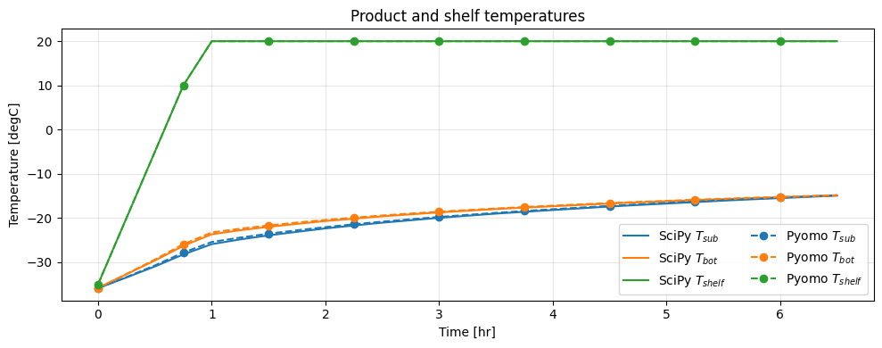
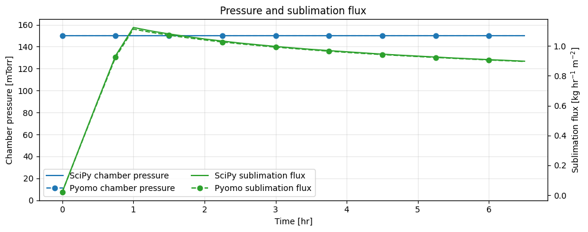
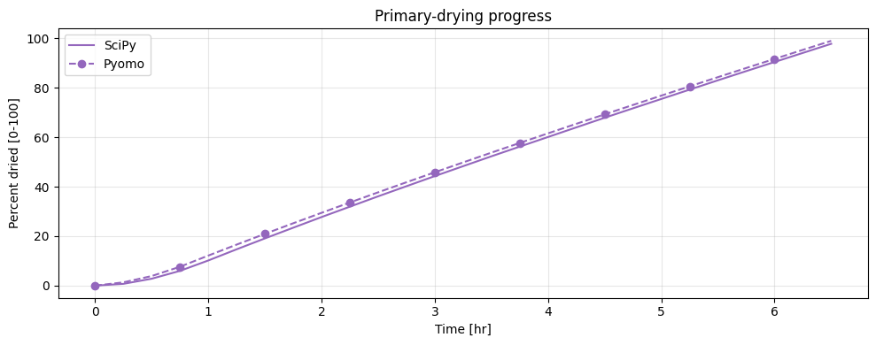
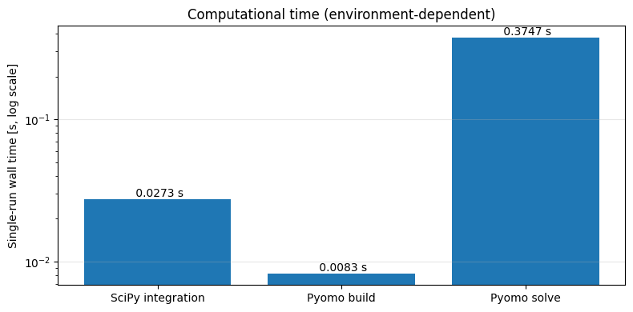

Original known-\(R_p\) workflow: SciPy and Pyomo
This tutorial reuses the original LyoPRONTO vial, product, heat-transfer, pressure, and shelf-temperature case. The canonical computation lives in examples.original_workflow_parity; this notebook adds explanation and plots.
The legacy SciPy calculator integrates until the configured schedule ends or drying completes. The Pyomo model is a fixed-control validation replay on 26 backward-Euler intervals of 0.25 hr (6.5 hr total), with a terminal target of at least 95% dried. It is therefore a discretization comparison, not a replacement for event-terminated integration. The figures retain the original temperature, pressure/flux, and percent-dried diagnostics while overlaying the Pyomo replay.
from pathlib import Path
import sys
from time import perf_counter
import matplotlib.pyplot as plt
from IPython.display import Markdown, display
repo_root = next(path for path in (Path.cwd(), *Path.cwd().parents) if (path / "pyproject.toml").exists())
if str(repo_root) not in sys.path:
sys.path.insert(0, str(repo_root))
from examples.original_workflow_parity import (
KNOWN_RP_ENDPOINT_TOLERANCE_PP,
build_known_rp_pyomo_model,
pyomo_ipopt_status,
run_known_rp_scipy,
solve_known_rp_pyomo_model,
)
The seven legacy columns are time [hr], sublimation-front temperature [degC], vial-bottom temperature [degC], shelf temperature [degC], chamber pressure [mTorr], sublimation flux [kg/hr/m\(^2\)], and percent dried [0-100].
scipy_start = perf_counter()
scipy_output = run_known_rp_scipy(dt=0.25)
scipy_elapsed_s = perf_counter() - scipy_start
print(f"SciPy: {scipy_output.shape[0]} nodes, {scipy_output[-1, 0]:.2f} hr, {scipy_output[-1, 6]:.2f}% dried")
print(f"SciPy integration wall time: {scipy_elapsed_s:.4f} s")
pyomo_ready, pyomo_message = pyomo_ipopt_status()
print(pyomo_message)
pyomo_build_elapsed_s = None
pyomo_solve_elapsed_s = None
if pyomo_ready:
pyomo_build_start = perf_counter()
pyomo_model = build_known_rp_pyomo_model(scipy_output)
pyomo_build_elapsed_s = perf_counter() - pyomo_build_start
pyomo_solve_start = perf_counter()
pyomo_result = solve_known_rp_pyomo_model(pyomo_model)
pyomo_solve_elapsed_s = perf_counter() - pyomo_solve_start
else:
pyomo_result = None
pyomo_output = pyomo_result.as_table() if pyomo_result is not None else None
if pyomo_result is not None:
print(pyomo_result.message)
print(f"Pyomo: {pyomo_output.shape[0]} nodes, {pyomo_output[-1, 0]:.2f} hr, {pyomo_output[-1, 6]:.2f}% dried")
print(f"Pyomo model construction wall time: {pyomo_build_elapsed_s:.4f} s")
print(f"Pyomo solver wall time: {pyomo_solve_elapsed_s:.4f} s")
Pyomo trajectory solve reached optimal; maximum constraint violation 4.423e-08.
Pyomo: 27 nodes, 6.50 hr, 98.95% dried
Pyomo model construction wall time: 0.0083 s
Pyomo solver wall time: 0.3747 s
display(Markdown(
f"On the default grid the accepted endpoint tolerance is "
f"**{KNOWN_RP_ENDPOINT_TOLERANCE_PP:g} percentage points dried**. "
"This tolerance records first-order backward-Euler discretization error; "
"pressure and shelf-temperature controls are fixed to the same sampled ramp profiles. "
"Reported wall times are single executions in the active environment, not benchmarks. "
"SciPy integration, Pyomo model construction, and the IPOPT solve are timed separately "
"because the two formulations do not have identical stopping rules or discretizations."
))
if pyomo_output is not None:
endpoint_error = abs(pyomo_output[-1, 6] - scipy_output[-1, 6])
assert pyomo_output.shape[1] == scipy_output.shape[1] == 7
assert endpoint_error <= KNOWN_RP_ENDPOINT_TOLERANCE_PP
assert pyomo_build_elapsed_s >= 0.0
assert pyomo_solve_elapsed_s >= 0.0
print(f"Endpoint difference: {endpoint_error:.3f} percentage points dried")
assert scipy_elapsed_s >= 0.0
temperature_columns = ((1, r"$T_{sub}$", "C0"), (2, r"$T_{bot}$", "C1"), (3, r"$T_{shelf}$", "C2"))
fig_temperature, temperature_axis = plt.subplots(figsize=(10, 4))
for column, label, color in temperature_columns:
temperature_axis.plot(scipy_output[:, 0], scipy_output[:, column], color=color, label=f"SciPy {label}")
if pyomo_output is not None:
for column, label, color in temperature_columns:
temperature_axis.plot(pyomo_output[:, 0], pyomo_output[:, column], "o--", markevery=3, color=color, label=f"Pyomo {label}")
temperature_axis.set(xlabel="Time [hr]", ylabel="Temperature [degC]", title="Product and shelf temperatures")
temperature_axis.grid(alpha=0.3)
temperature_axis.legend(ncols=2)
fig_temperature.tight_layout()
fig_transport, pressure_axis = plt.subplots(figsize=(10, 4))
flux_axis = pressure_axis.twinx()
pressure_axis.plot(scipy_output[:, 0], scipy_output[:, 4], color="C0", label="SciPy chamber pressure")
flux_axis.plot(scipy_output[:, 0], scipy_output[:, 5], color="C2", label="SciPy sublimation flux")
if pyomo_output is not None:
pressure_axis.plot(pyomo_output[:, 0], pyomo_output[:, 4], "o--", markevery=3, color="C0", label="Pyomo chamber pressure")
flux_axis.plot(pyomo_output[:, 0], pyomo_output[:, 5], "o--", markevery=3, color="C2", label="Pyomo sublimation flux")
pressure_max = max(scipy_output[:, 4].max(), pyomo_output[:, 4].max() if pyomo_output is not None else 0.0)
pressure_axis.set(xlabel="Time [hr]", ylabel="Chamber pressure [mTorr]", title="Pressure and sublimation flux")
pressure_axis.set_ylim(0.0, 1.1 * pressure_max)
flux_axis.set_ylabel(r"Sublimation flux [kg hr$^{-1}$ m$^{-2}$]")
pressure_axis.grid(alpha=0.3)
transport_lines = pressure_axis.lines + flux_axis.lines
pressure_axis.legend(transport_lines, [line.get_label() for line in transport_lines], ncols=2)
fig_transport.tight_layout()
fig_dried, dried_axis = plt.subplots(figsize=(10, 4))
dried_axis.plot(scipy_output[:, 0], scipy_output[:, 6], color="C4", label="SciPy")
if pyomo_output is not None:
dried_axis.plot(pyomo_output[:, 0], pyomo_output[:, 6], "o--", markevery=3, color="C4", label="Pyomo")
dried_axis.set(xlabel="Time [hr]", ylabel="Percent dried [0-100]", title="Primary-drying progress")
dried_axis.grid(alpha=0.3)
dried_axis.legend()
fig_dried.tight_layout()
timing_labels = ["SciPy integration"]
timing_values = [scipy_elapsed_s]
if pyomo_build_elapsed_s is not None and pyomo_solve_elapsed_s is not None:
timing_labels.extend(["Pyomo build", "Pyomo solve"])
timing_values.extend([pyomo_build_elapsed_s, pyomo_solve_elapsed_s])
fig_timing, timing_axis = plt.subplots(figsize=(8, 4))
timing_axis.bar(timing_labels, timing_values)
timing_axis.set_yscale("log")
timing_axis.set(ylabel="Single-run wall time [s, log scale]", title="Computational time (environment-dependent)")
timing_axis.grid(axis="y", alpha=0.3)
for index, value in enumerate(timing_values):
timing_axis.text(index, value, f" {value:.4f} s", ha="center", va="bottom")
fig_timing.tight_layout()



